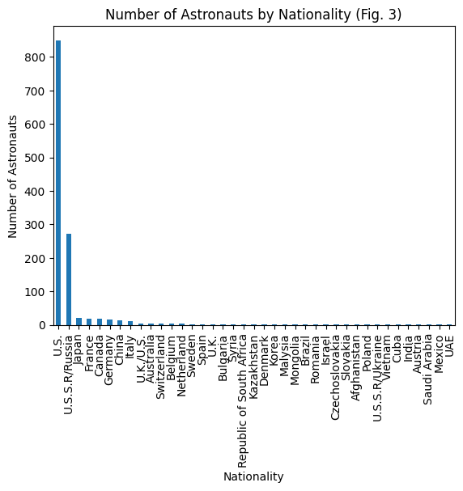
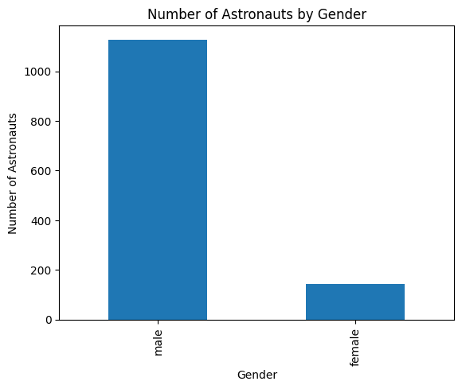
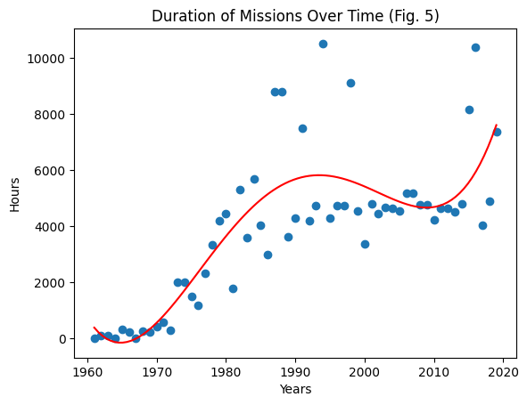
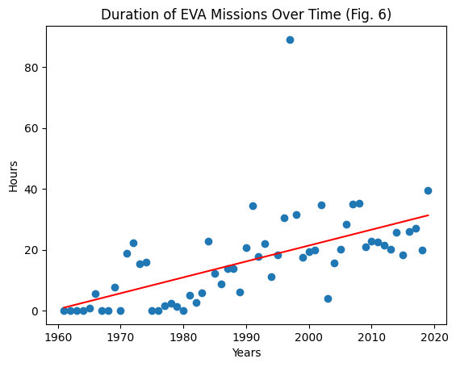

---
title: "First File"
description: "Testing Quarto"
author: "Haocheng Feng"
date: "03/12/2023"
date-modified: "03/12/2023"
---Introduction
Dataset Link:https://corgis-edu.github.io/corgis/csv/astronauts/
The dataset above is created with publicly available data from NASA and includes all of the space missions before 15 January 2020. The dataset focuses on both the astronauts themselves such as full astronaut name, sex, date of birth, nationality, military status, a title and year of a selection program. In addition to information regarding the astronauts, the dataset also includes details of the mission with metrics such as duration of the mission and extravehicular activity.
As someone with a passion for space exploration, this dataset from CORGIS immediately captured my attention as I found it extremely intriguing. The dataset itself also provides a considerable amount of information that will prove to be valuable in my analysis.
I hope to dive deeper into the following analysis questions: - How has space exploration advanced in the past decades? - How has the demographic of astronauts changed over time? - What does this dataset reveal about the space race and how has each country played a role in it?
Dataset Exploration
import requests
from bs4 import BeautifulSoup
import pandas as pd
import matplotlib.pyplot as plt
def pdcorgis(name):
name = name.lower()
url = "https://corgis-edu.github.io/corgis/csv/" + name + "/"
response = requests.get(url)
soup = BeautifulSoup(response.text, 'html.parser')
a_tags = soup.find_all('a')
a_href = ''
for a_tag in a_tags:
if a_tag.has_attr('download'):
a_href = a_tag['href']
dl_url = "https://corgis-edu.github.io/corgis/csv/" + name + "/" + a_href
df = pd.read_csv(dl_url)
return df
df = pdcorgis("Astronauts")
df.describe()| Profile.Astronaut Numbers.Overall | Profile.Astronaut Numbers.Nationwide | Profile.Birth Year | Profile.Selection.Year | Profile.Lifetime Statistics.Mission count | Mission.Year | Mission.Durations.Mission duration | Profile.Lifetime Statistics.Mission duration | Mission.Durations.EVA duration | Profile.Lifetime Statistics.EVA duration | |
|---|---|---|---|---|---|---|---|---|---|---|
| count | 1270.000000 | 1270.000000 | 1270.000000 | 1270.000000 | 1270.000000 | 1270.000000 | 1270.000000 | 1270.000000 | 1270.000000 | 1270.000000 |
| mean | 273.451181 | 128.320472 | 1951.659055 | 1985.496850 | 2.991339 | 1994.540945 | 1052.018987 | 2976.400531 | 3.666326 | 10.799559 |
| std | 147.879465 | 96.880495 | 11.433481 | 12.166869 | 1.399343 | 12.568093 | 1716.243661 | 4219.885619 | 7.289887 | 16.066000 |
| min | 1.000000 | 1.000000 | 1921.000000 | 1959.000000 | 1.000000 | 1961.000000 | 0.000000 | 0.610000 | 0.000000 | 0.000000 |
| 25% | 152.250000 | 47.250000 | 1944.000000 | 1978.000000 | 2.000000 | 1986.000000 | 190.007500 | 487.750000 | 0.000000 | 0.000000 |
| 50% | 277.000000 | 110.000000 | 1952.000000 | 1987.000000 | 3.000000 | 1995.000000 | 261.000000 | 938.000000 | 0.000000 | 0.000000 |
| 75% | 387.000000 | 203.750000 | 1959.000000 | 1995.000000 | 4.000000 | 2003.000000 | 382.000000 | 4270.000000 | 4.765000 | 19.520000 |
| max | 565.000000 | 433.000000 | 1983.000000 | 2018.000000 | 7.000000 | 2019.000000 | 10505.000000 | 21083.520000 | 89.130000 | 78.800000 |
df.head()| Profile.Astronaut Numbers.Overall | Profile.Astronaut Numbers.Nationwide | Profile.Name | Profile.Gender | Profile.Birth Year | Profile.Nationality | Profile.Military | Profile.Selection.Group | Profile.Selection.Year | Profile.Lifetime Statistics.Mission count | Mission.Role | Mission.Year | Mission.Name | Mission.Vechicles.Ascent | Mission.Vechicles.Orbit | Mission.Vechicles.Decent | Mission.Durations.Mission duration | Profile.Lifetime Statistics.Mission duration | Mission.Durations.EVA duration | Profile.Lifetime Statistics.EVA duration | |
|---|---|---|---|---|---|---|---|---|---|---|---|---|---|---|---|---|---|---|---|---|
| 0 | 1 | 1 | Gagarin, Yuri | male | 1934 | U.S.S.R/Russia | True | TsPK-1 | 1960 | 1 | pilot | 1961 | Vostok 1 | Vostok 1 | Vostok 2 | Vostok 3 | 1.77 | 1.77 | 0.0 | 0.0 |
| 1 | 2 | 2 | Titov, Gherman | male | 1935 | U.S.S.R/Russia | True | TsPK-1 | 1960 | 1 | pilot | 1961 | Vostok 2 | Vostok 2 | Vostok 2 | Vostok 2 | 25.00 | 25.30 | 0.0 | 0.0 |
| 2 | 3 | 1 | Glenn, John H., Jr. | male | 1921 | U.S. | True | NASA Astronaut Group 1 | 1959 | 2 | pilot | 1962 | MA-6 | MA-6 | MA-6 | MA-6 | 5.00 | 218.00 | 0.0 | 0.0 |
| 3 | 3 | 1 | Glenn, John H., Jr. | male | 1921 | U.S. | True | NASA Astronaut Group 2 | 1959 | 2 | PSP | 1998 | STS-95 | STS-95 | STS-95 | STS-95 | 213.00 | 218.00 | 0.0 | 0.0 |
| 4 | 4 | 2 | Carpenter, M. Scott | male | 1925 | U.S. | True | NASA- 1 | 1959 | 1 | Pilot | 1962 | Mercury-Atlas 7 | Mercury-Atlas 7 | Mercury-Atlas 7 | Mercury-Atlas 7 | 5.00 | 5.00 | 0.0 | 0.0 |
fig, ax = plt.subplots()
df['Mission.Year'] = pd.to_datetime(df['Mission.Year'])
df.plot(x='Mission.Year', y='Profile.Astronaut Numbers.Overall', ax=ax, label='Astronaut Count')
# set the labels and title
ax.set_xlabel('Year')
ax.set_ylabel('Number of Astronauts')
ax.set_title('Number of Astronauts Worldwide')
# add a legend
ax.legend()
# show the plot
plt.show()
counts = df['Profile.Gender'].value_counts()
fig, ax = plt.subplots()
counts.plot(kind='bar', ax=ax)
ax.set_xlabel('Gender')
ax.set_ylabel('Number of Astronauts')
ax.set_title('Number of Astronauts by Gender')
plt.show()
counts = df['Profile.Nationality'].value_counts()
fig, ax = plt.subplots()
counts.plot(kind='bar', ax=ax)
ax.set_xlabel('Nationality')
ax.set_ylabel('Number of Astronauts')
ax.set_title('Number of Astronauts by Nationality')
plt.show()
counts = df['Mission.Year'].value_counts()
fig, ax = plt.subplots()
counts.plot(kind='bar', ax=ax)
ax.set_xlabel('Year')
ax.set_ylabel('Number of Astronauts on Missions')
ax.set_title('Number of Astronauts on Missions by Years')
plt.show()
Some additional visualizations I would like create relating to my analysis questions incude: - A line graph of mission duration x years to see if space missions have gotten longer over the years - A line graph of EVA duration x years to see if EVA has gotten longer over the years - A double bar graph of astronauts over time by gender to see the gender ratio in astronauts - A line graph of number of astronauts by nationality over time to see how different countries have developed their space exploration programs over the years